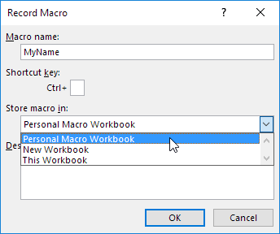
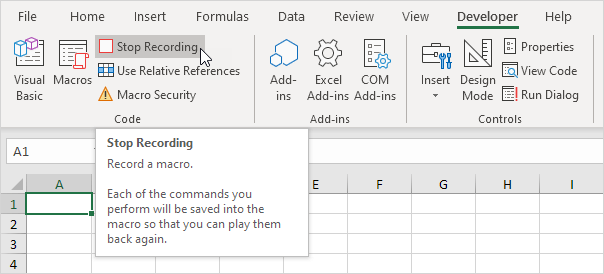
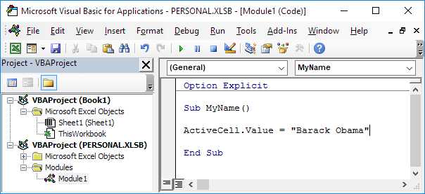
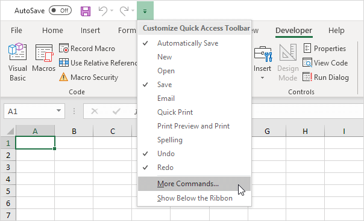
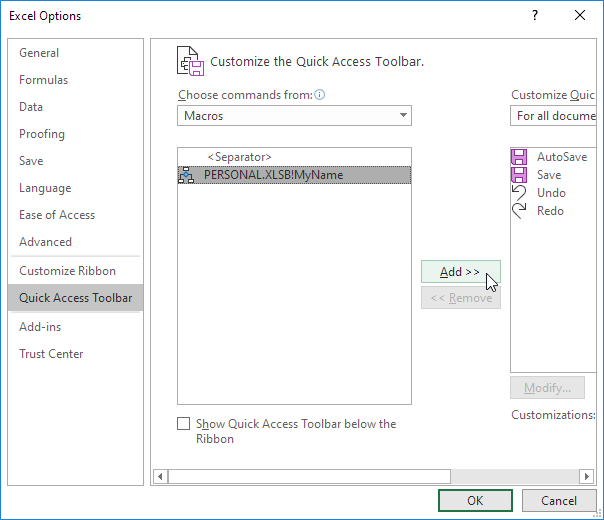
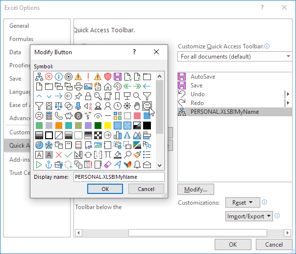
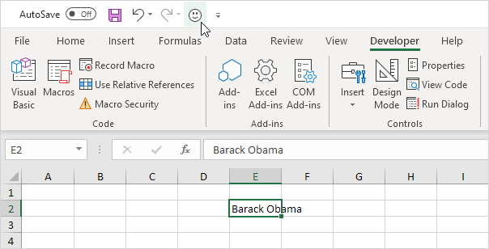
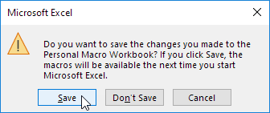

Add a Macro to the Toolbar
If you use an Excel macro frequently, you can add it to the Quick Access Toolbar. This way you can quickly access your macro. First, we record an empty macro.
1. On the Developer tab, click Record Macro.

2. Name the macro MyName. Choose to store the macro in Personal Macro Workbook. This way the macro will be available to all your workbooks (Excel files). This is possible because Excel stores your macro in a hidden workbook that opens automatically when Excel starts.

3. Click OK.
4. Click Stop Recording.

5. Open the Visual Basic Editor.
6. Create the macro:

This macro places your name in the Active Cell.
7. Close the Visual Basic Editor.
8. Now we can add this macro to the Quick Access Toolbar. Click the down arrow and click More Commands.

9. Under Choose commands, select Macros.
10. Select the macro and click Add.

11. You can modify the button that will be added to the Quick Access Toolbar by clicking on Modify. For example, choose a smiley.

12. Click OK twice.
13. You can now execute the macro. For example, select cell E2 and click on the smiley button added to the Quick Access Toolbar.
Result:

14. When you close Excel, Excel asks you to save the changes you made to the Personal Macro Workbook. Click Save to store this macro in a hidden workbook that opens automatically when Excel starts. This way the macro will be available to all your workbooks (Excel files).
